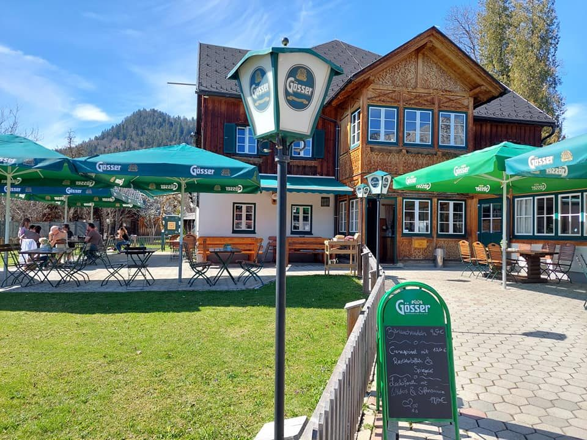
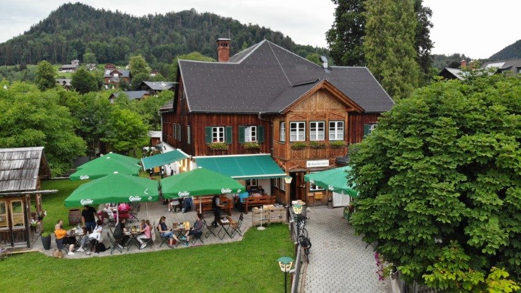
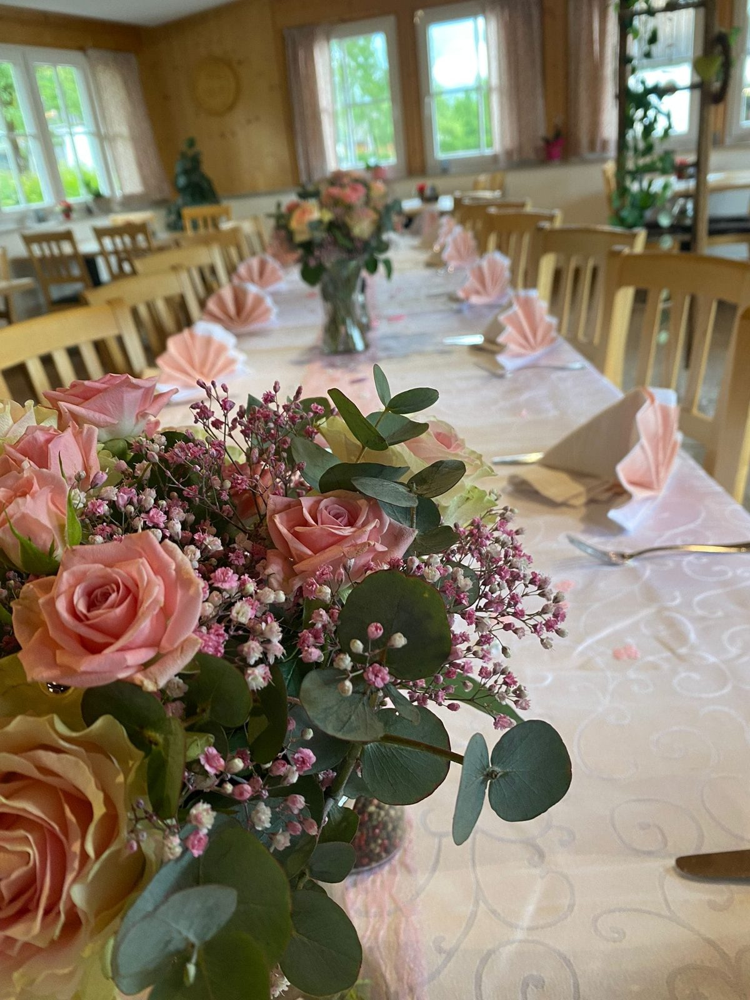
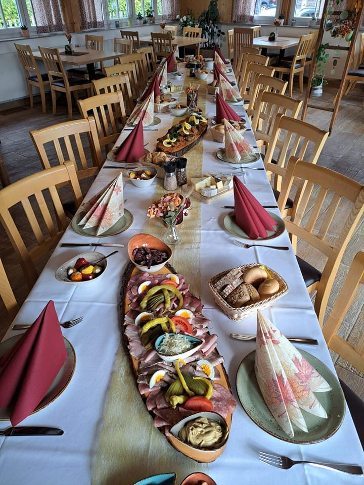
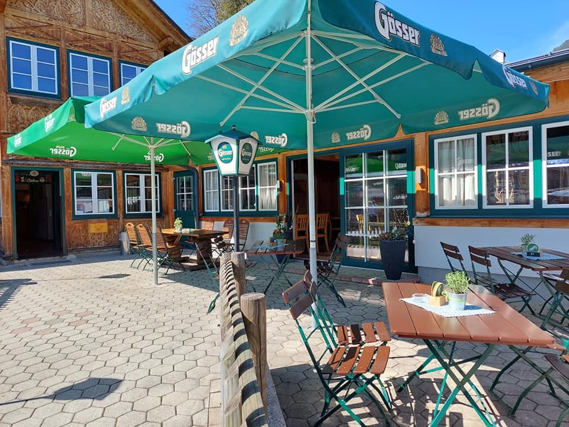

Altaussee 19 · Ausseerland
Wirtshaus mitten im Ort — mit Gastgarten und zwei Gästezimmern
Beim Schneiderwirt gibt es durchgehend warme Küche von 11:30 bis 21:00 Uhr. Kein Warten auf die Küchenzeit, kein geschlossener Nachmittag: Wer aus dem Salzkammergut heimkommt oder vom Loser herunterfährt, bekommt auch um 15:30 Uhr noch etwas Warmes.
- 11:30 – 21:00durchgehend warme Küche
- GastgartenSonnenschirme, Blick ins Grüne
- 2 Gästezimmermitten im Ortszentrum
- 4,8 von 5aus 874 Bewertungen auf Restaurant Guru
Das Haus
Gasthaus Schneiderwirt, Altaussee 19
Das Haus steht im Ortszentrum von Altaussee — Gaststube im Inneren, davor der Gastgarten, dahinter die Wiese. Gastgeber ist Michael Kainzinger.
Viele Gäste kommen zu Fuß aus dem Ort oder vom See herunter, andere sind nach einer Tour im Ausseerland unterwegs. Deshalb ist die Küche durchgehend offen und die Karte gibt es auf Deutsch und auf Englisch.

Wann offen ist
Sieben Tage, zwei Ruhetage je nach Saison
Die Öffnungszeiten unterscheiden sich zwischen Haupt- und Nebensaison — hier stehen beide Varianten, damit niemand vor verschlossener Tür steht.
Öffnungszeiten
- Montag
- 10:00 – 22:00
- Dienstag
- Ruhetag
- Mittwoch Hauptsaison
- 10:00 – 22:00
- Mittwoch Nebensaison
- Ruhetag
- Donnerstag
- 10:00 – 22:00
- Freitag
- 10:00 – 22:00
- Samstag
- 10:00 – 22:00
- Sonntag
- 10:00 – 22:00
Warme Küche durchgehend von 11:30 bis 21:00 Uhr — auch am Nachmittag. In der Nebensaison bleibt neben dem Dienstag auch der Mittwoch Ruhetag.
Küche
Die Tageskarte gehört aufs Handy, nicht in ein PDF
Heute hängt die Tageskarte als PDF hinter einem QR-Code. In dieser Vorschau wird daraus ein Bereich, den der Wirt selbst in zwei Minuten aktualisiert — lesbar am Telefon, ohne Zoomen, auf Deutsch und Englisch.
Tageskarte
Wechselnde Gerichte, vom Wirt direkt gepflegt. Gäste sehen die Karte des Tages, bevor sie losgehen.
Speisekarte DEU / ENG
Beide Sprachfassungen bleiben erhalten — nur nicht mehr als PDF-Download, sondern als Seite, die am Handy sofort aufgeht.
QR-Code am Tisch
Der Code am Tisch führt direkt auf die aktuelle Karte — derselbe Weg wie bisher, nur ohne PDF-Umweg.

Gastgarten
Draußen sitzen, solange das Wetter mitspielt
Der Gastgarten liegt direkt vor dem Haus, mit Schirmen und Blick ins Grüne. Bei Schönwetter ist er der beliebteste Platz im Haus — eine Reservierung mit dem Vermerk „Gastgarten“ hilft.
Übernachten & Feiern
Zwei Gästezimmer und Platz für lange Tafeln
Gästezimmer
Zwei Zimmer im Haus, mitten im Ortszentrum von Altaussee — Gaststube im Erdgeschoß, See und Ortskern zu Fuß erreichbar. Verfügbarkeit und Preis klärt der Wirt direkt.
Familienfeiern
Für Feiern werden die Tische zu einer Tafel zusammengestellt — die Bilder aus dem Haus zeigen gedeckte Tafeln mit Blumenschmuck und Platten in der Mitte.



Tisch beim Schneiderwirt sichern
Reservierung, Zimmeranfrage und Feier-Anfrage laufen in dieser Vorschau über ein Formular — im Live-Betrieb landen sie direkt beim Wirt.